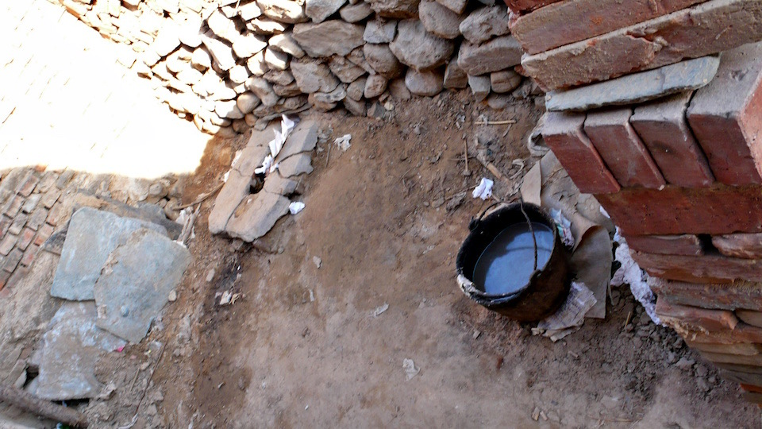
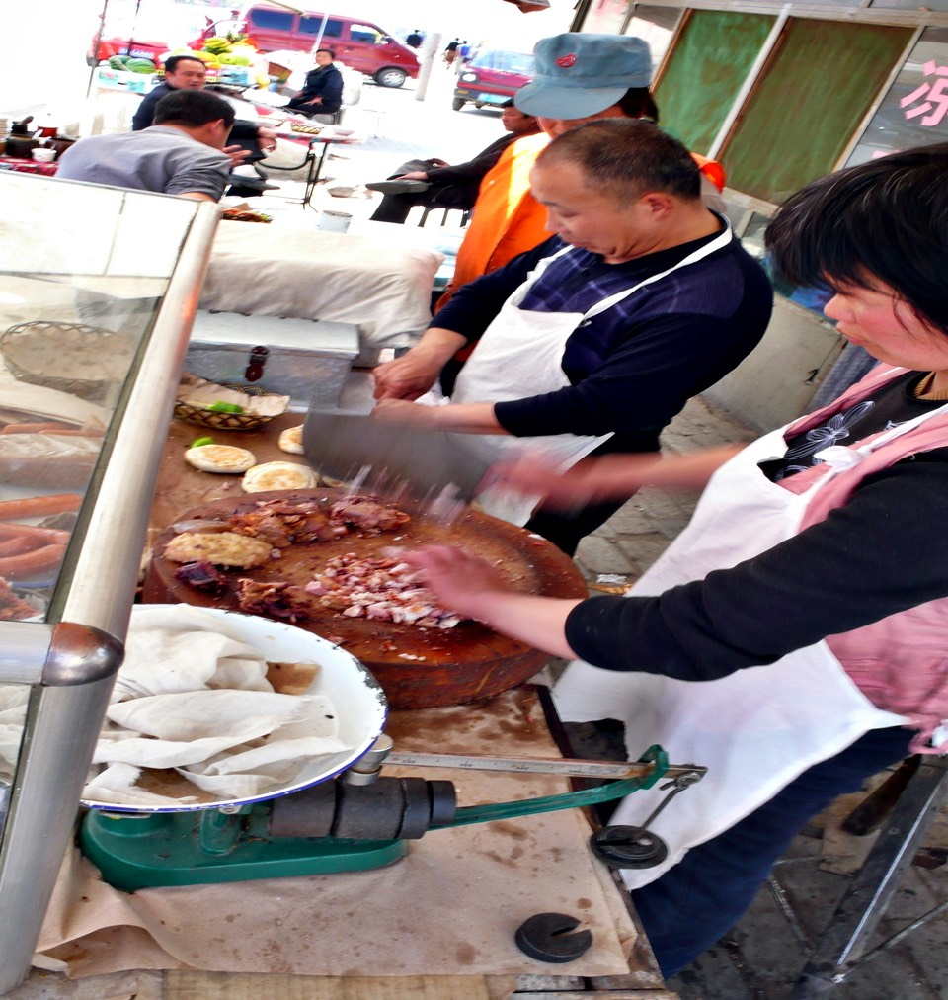

There are less chicken here so the clucking power is weak but I still woke up before six.
I opened the door and stretched myself right when the owner with a yellow safety helmet walked by on his way to work.
So I quickly paid him 10bucks for the night and asked for a keg of water to fill my water bottles for the day.
I packed my sleeping bag and as usually I checked Dido for loose nuts and the racks then I fill up its tires.
Even I wake up before six,
but if I do this routine everyday my departure time is always as late as thirty minutes after seven.
I have to accustom myself to wake up as early as four thirty so I can leave before six.
The air is cooler in the early morning and I won’t be under the sun for a whole day like today.
I almost fainted.
I left a little gift in open air latrine on this cold early morning.
The basic things being a human, to eat, to drink, to stool, to urinate and to sleep it’s as easy as said and done.

After about half hour of my departure I ate the cookies I bought at “Fortune Convenient Store” yesterday.
I am left without emergency provision, or should I say snacks, after I finished the cookies.
A half hour later I stopped by the “Happy Eastern Grocery Store” to get some provisions.
I saw something like walnut cookies so I asked the owner how much it costs.
“5 bucks”.
I immediately reacted with a “too expensive” expression on my face.
5 per cookie?
Now that’s very expensive.
Well it was actually 5 bucks per 500 grams.
In China everything sells by the weight instead of units.
So I took 4 piece of those cookies which cost me 4 bucks
and I bought two envelop of corn flavored milk (1.5 each), because I wanted to drink milk.
At all it cost me 12 bucks. I paid with a one hundred bill and got 88 of change back.
This will allow me to have fun buying things for a few days.
So I finished breakfast riding in order to catch up on the journey.
Since I left Beijing I embarrassingly got lost so I want to get to Baoding in one day.
I plan to ride from Yi County to Laishui County and then to Gaobeidian City.
If I do this then I will only loose one day from my “lost journey”.
There’s some pleasure getting lost.
I could enjoy the great scenes in the mountain even though it was a hard up hill right but it was well worth it.
The road I took this morning was big and smooth.
There were stores or farmlands along the way.
I gained some speed but at the same time it was tiring.
I rode so fast that I arrived at Gaobeidian city at ten thirty even though I planned to get here in the afternoon.
I should celebrate since the 107 National Freeway which is the way I should have taken reappeared.
Now I am back on track!
I will head south on 107 National Freeway,
pass by a few large cities along the way then make a turn and I will be in Xian.
Now I believe that I can ride easily and get to Xian according to my plan in two weeks.
Once I connected with the 107 freeway the roads transformed into big avenues.
There are about five lanes in each direction, that’s how big it is.
But of course the downside is that trucks are abundant.
The drivers seem to speak with their horn.
According to the way and the frequency they use the horn I can translate them into:
“Hey get off of my way you asshole!”
“Watch it! Your daddy is coming through.”
“What are you doing riding around with a bike. Are you bored?”
“Hi there~ How are you?”
Well, yes there are few that salute you with a clang.
Comparing to those trucks they are much nicer.
But having someone clang at you, when you are riding bike it certainly feels awful.
So now, I learned to be polite.
Every time someone clangs at me I will just put up my left hand and show the respect with my middle finger.
I also saw an entire army going through shaking the National Freeway.
First it was the heavy infantry with tanks and then the rocket launchers passed by.
I don’t know if those soldiers standing in the middle of the street
had something to do with the infantry that just passed by.
But they don’t seem like controlling the traffic and they just stand there like statues.
Poor them, the sun is so strong that I am almost fainting.
The sun is so strong that if I stop to rest and remove my butt from the seat for 10 seconds and then seat back,
I will feel a burning sensation.
I feel evaporated exactly at 12 o’clock at noon.
I drank enough water and two envelop of milk how come I still felt so thirty.
Choosing a place to eat depends on your feelings.
Today I felt chemistry between this fruit stand and me so I stopped and put Dido under shade.
I chose a watermelon. The owner reminded me that it’s yellow meat.
Yellow or red doesn’t matter to me I just want her to chop it open and I will eat it to hydrate myself.
The watermelon cost 9 bucks and weighted about 2 kilogram.
In Taiwan I can only buy a cup of watermelon juice with the same price.
The owner pulled a chair and gave it to me.
She instructed me to sit under a big umbrella. It was nice to be away of the sun for a while.
I slowly finished the watermelon by myself.
I believe that’s enough to hydrate me.
Next to the fruit stand there’s a food stand they have a bucket of water and tower
for customer to wash their hands before eating.
So I asked to wash my hand there.
I didn’t dare to use the tower but I rubbed my face with the clean water. It sure felt good.
The owner of this stand was cooking pancake.
I asked if there’s any filling to this pancake.
It was filled with chopped barbequed donkey meat.
Watching others eat, it looked like delicious so I bought three of them, one each. It’s very cheap.

I am always asked if I want some beer with my meal.
Beer here in China is very cheap, two or three bucks per bottle and it taste good.
But since I have to get going I didn’t buy it.
I finished my lunch riding just like my breakfast.
The barbequed donkey tastes like a mix of salt preserved meat with barbequed pork.
It’s balanced in fat and meat and very juicy.
It’s so good and cheap that once I took the first bite I wanted to go back and buy more.
About 10 minutes to one in the afternoon I suddenly felt dizzy.
My head felt like someone wrapped my head with cotton and put a rubber band around it.
I believe it’s because I didn’t rest for the whole day.
I think I was about to have a heatstroke.
I don’t have to prove myself anything so I rode to a gas station along the way and hide myself under shade.
I took off my jacket and peer off my babushka, dropped my sunglasses and opened my cloth’s zipper.
I lay on the stairs and rested.
The clerk came out and asked me what I wanted I told him that I just want to get away from the sun so he left me.
I felt dizzy and sleepy laying there so I hold my bike and took a one hour nap.
I felt much better after the nap. The sun is less irritating around two in the afternoon.
I woke up put sun block on my face and my calf and continued riding.
After a while I saw a toll both. Did I get lost again and went on a highway?
Why there’s a toll both?
Actually the National Freeway also collected toll but it’s free for bicycles.
I passed the toll both and went to buy a cold drink to reward myself for riding under the irritating sun.
I bought a can of what supposed to be coke and tasted like coke which cost 2.5 bucks.
After I consumed half of the can I realized that it actually wasn’t Coca Cola it was called “Future Cola”
produced by “WAHAHA GROUP”.
I swear that everything I say is true if not I won’t be able to drink the real Coca Cola never in my life.
(Website of WAHAHA added by H2 http://future.en.wahaha.com.cn/softdrinking.shtml)
I don’t dare to ride away from 107 National Freeway just in case I get lost.
I will just head south accordingly.
I saw a eight years old girl doing homework at the door steps of a hotel,so decided to stay here for tonight.
It cost 20 bucks and it is far better room than yesterday’s filthy room.
It is a regular hotel with clean blankets.
Since it was still early, so I decided to wash my three day laundry
which included my dirty jacket, dirty shorts, dirty dry tex shirt, dirty babushka, dirty gloves and dirty socks.

The owner gave me a big red bucket.
There was detergent so I didn’t have to use my soap.
I washed them quickly and hanged them when the sun was still up.
I also collected a bucket of well water and bath myself and washed my head.
After three days of bike journey I felt like I washed away every dirty of me.
Not long after I checked in the hotel an elder biker also checked in.
His last name is Yang from Chongqing.
He was riding from there to Beijing. He rode 1900Km in just 15 days.
I asked his age and unbelievably he is sixty years old.
He definitely was very energetic.
I noticed that he only carried a bottle with a straw and two bags on the rack.

His tires were all patched up but he kept using them and rode for almost 2000Km.
He will get to Beijing tomorrow which means he will only spend one day to get there.
I didn’t dare to tell him that I spent three days to get here.
It was too embarrassing.
After settling down I went out with my shorts and sleeveless shirt to find dinner.
It was kind of cold to go further away as the owner indicated me
so I decided to eat right at the door where a newly installed red sign said
“GRILL”. “I will have this” I told the owner and ordered a serving.
One serving included one hot dog, one pork meat, one lamb, one beef, one chicken heart and one grilled skin.
Everything was sprayed with a little special spice.
Once I took a bite I couldn’t stop.
The owner told me that tomorrow is their inauguration and that they were grilling it for themselves today.
But since I wanted to eat so I became their first customer.
It was delicious so I ordered 2 more pork, lamb and hot dog.
I was still hungry after that so the owner took out white bun and grilled it.
I didn’t know that can be grilled.
It was crispy after grilled with some spice sprayed on top it tasted very good.
And finally I was full. Suddenly I realized that I ordered and ate a bunch of stuffs.
I was wondering how much it will cost me. “7.50 bucks, just give 7.”
Really that cheap? I ate a lot. I don’t want you to go bankrupt before inauguration.
Well, I took my big round belly back to my room drink some tea.
After I brush my teeth I will be able to sleep early today.
Being able to find a place early to spend the night it’s a very neat thing to do.